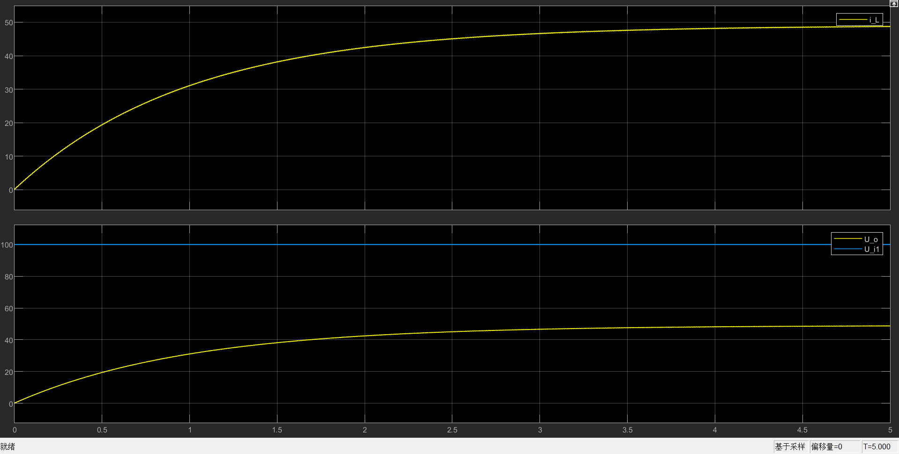
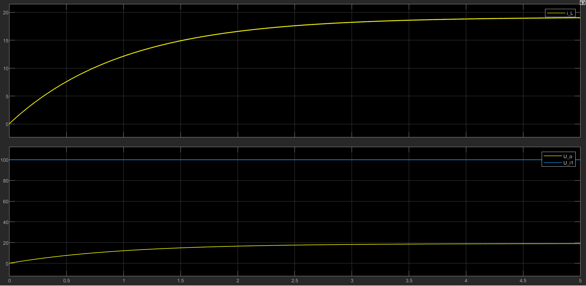
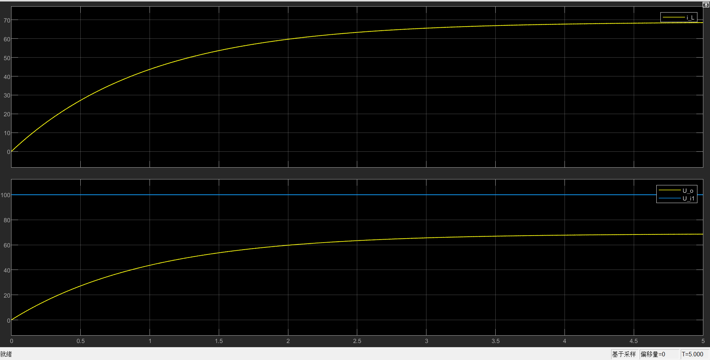

本章节对《电力电子技术》中的直流支流变换电路进行仿真深入学习。
首先需要谨记的基本原理是：
稳态条件下，电感两端电压在一个开关周期内的积分为0
1. 降压斩波电路(Buck)

以上是本Buck电路的Simulink搭建图，其参数如下：
| 参数 | 值 |
|---|---|
| 100V | |
| 1H | |
| 1e-6F | |
通过调整 Pulse Generator 的参数，来调节占空比，从而得到不同的输出电压。
1.1 CCM 电感电流连续模式
时波形：

时波形：

时波形：

三种占空比，验证了Buck电路的输入输出关系：
通过仿真还可以可以明显发现，频率越高，效果越好，纹波越小。以上仿真的频率均为100Hz如果把IGBT的频率降低为1Hz,则输出波形为：

可以发现纹波确实很大。
1.2 DCM 电感电流断续模式
这部分暂时没能成功仿真，等之后问一下老师，再写这一部分。
2. 升压斩波电路(Boost)
升压斩波电路的输入输出电压与占空比的关系是：
升压斩波电路模型如下：

参数如下：
| 参数 | 值 |
|---|---|
| 100V | |
| 1mH | |
| 100e-6F | |
仿真结果如下：

本例的占空比位，所以，所以，输出电压应该为250V，仿真结果与实际相符。